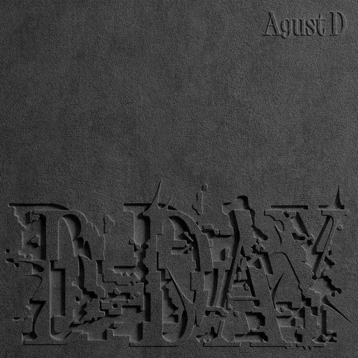
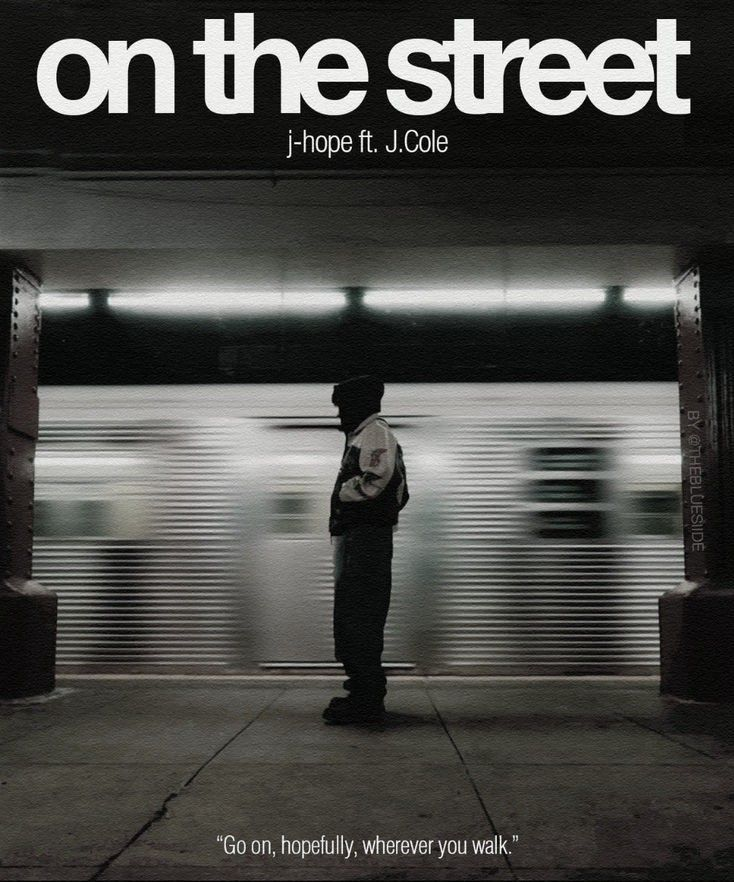

D-Day-AgustD
Traducción del inglés-D-Day es el álbum de estudio debut del rapero surcoreano Agust D, también conocido como Suga de BTS. Fue lanzado el 21 de abril de 2023 a través de Big Hit Music, como la tercera entrega de una trilogía de trabajos que incluye los mixtapes Agust D y D-2.

j-hope hope on the street vol. 1-Jhope
Traducción del inglés-Esperanza en la calle vol. 1 es la primera banda sonora y obra extendida del rapero surcoreano J-Hope de BTS, lanzada el 29 de marzo de 2024 por Big Hit Music
RM Right Place, Wrong Person-RM
Right Place, Wrong Person es el segundo álbum de estudio del rapero surcoreano RM de BTS, lanzado el 24 de mayo de 2024 a través de Big Hit Music.